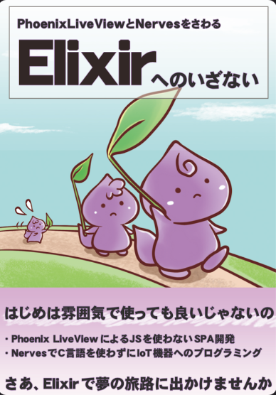
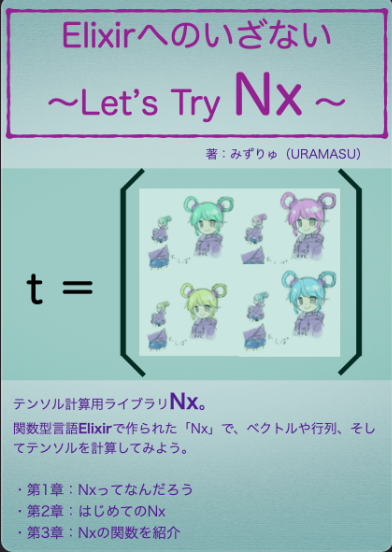

rykawamu(MzRyuKa) Portfolio
趣味で、技術同人誌を書いています。主にプログラミング言語Elixirを題材にしたものを書いています。
商業誌
Elixirへのいざない

技術同人誌
技術同人誌版は BOOTH で販売しています。
PhoenixLiveViewとNervesをさわるElixirへのいざない
初出：技術書典7

Elixirへのいざない2〜もっとNervesをさわる〜
初出：技術書典応援祭（技術書典8）

錬金術師見習いエリィと歩むたのしいElixir 〜Elixirへのいざない外伝〜
初出：技術書典9
 初出：技術書典11
初出：技術書典11
Elixirへのいざない Let's try Nx

Elixirへのいざない ネイティブアプリを錬金しよう（free版）
初出：技術書典12
育児休業のススメ 〜アラフォーITエンジニアの育休体験記〜
初出：技術書典10

他の技術同人誌への寄稿
コラムや短かめの章などを寄稿しています。
※リンク切れを起こしている場合はご了承ください。